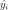
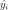

LinearModelResult¶
-
class
otlm.LinearModelResult(*args)¶ The LinearModelResult class is created through the method getResult of a LinearModelAlgorithm.
- Available constructors:
- LinearModelResult(inputSample, basis, design, outputSample, metaModel, trendCoefficients, formula, coefficientsNames, sampleResiduals, diagonalGramInverse, leverages, cookDistances)
Parameters: - inputSample, outputSample :
Sample The input and output samples of a model.
- metaModel :
Function The meta model.
- basis :
Basis Functional basis to estimate the trend.
- design :
Matrix The design matrix math:X.
- trendCoefficients :
Point The trend coeffients associated to the linearmodel.
- formula :
String The formula description.
- coefficientsNames :
Description The coefficients names of the basis.
- sampleResiduals :
Point The residual errors.
- diagonalGramInverse :
Point The diagonal of the Gram inverse matrix.
- leverages :
Point The leverage score.
- cookDistances :
Point The cook’s distances.
See also
LinearModel,LinearModelAlgorithmMethods
getClassName()Accessor to the object’s name. getCoefficientsNames()Accessor to the coefficients names. getCookDistances()Accessor to the cook’s distances. getDiagonalGramInverse()Accessor to the diagonal gram inverse matrix. getFittedSample()Accessor to the fitted sample. getFormula()Accessor to the formula. getId()Accessor to the object’s id. getInputSample()Accessor to the input sample. getLeverages()Accessor to the leverages. getMetaModel()Accessor to the metamodel. getModel()Accessor to the model. getName()Accessor to the object’s name. getOutputSample()Accessor to the output sample. getRelativeErrors()Accessor to the relative errors. getResiduals()Accessor to the residuals. getSampleResiduals()Accessor to the residuals. getShadowedId()Accessor to the object’s shadowed id. getStandardizedResiduals()Accessor to the standardized residuals. getTrendCoefficients()Accessor to the coefficients of the linear model of the trend. getVisibility()Accessor to the object’s visibility state. hasName()Test if the object is named. hasVisibleName()Test if the object has a distinguishable name. setMetaModel(*args)Accessor to the metamodel. setModel(*args)Accessor to the model. setName(*args)Accessor to the object’s name. setRelativeErrors(*args)Accessor to the relative errors. setResiduals(*args)Accessor to the residuals. setShadowedId(*args)Accessor to the object’s shadowed id. setVisibility(*args)Accessor to the object’s visibility state. -
__init__(*args)¶ x.__init__(…) initializes x; see help(type(x)) for signature
-
getClassName()¶ Accessor to the object’s name.
Returns: - class_name : str
The object class name (object.__class__.__name__).
-
getCoefficientsNames()¶ Accessor to the coefficients names.
Returns: - coefficientsNames :
Description
- coefficientsNames :
-
getDiagonalGramInverse()¶ Accessor to the diagonal gram inverse matrix.
Returns: - diagonalGramInverse :
Point
- diagonalGramInverse :
-
getFormula()¶ Accessor to the formula.
Returns: - condensedFormula :
String
- condensedFormula :
-
getId()¶ Accessor to the object’s id.
Returns: - id : int
Internal unique identifier.
-
getInputSample()¶ Accessor to the input sample.
Returns: - inputSample :
Sample The Xsample which had been passed to the constructor.
- inputSample :
-
getModel()¶ Accessor to the model.
Returns: - model :
Function Physical model approximated by a metamodel.
- model :
-
getName()¶ Accessor to the object’s name.
Returns: - name : str
The name of the object.
-
getOutputSample()¶ Accessor to the output sample.
Returns: - outputSample :
Sample The Ysample which had been passed to the constructor.
- outputSample :
-
getRelativeErrors()¶ Accessor to the relative errors.
Returns: - relativeErrors :
Point The relative errors defined as follows for each output of the model:
 with
with  the vector of the model’s values
the vector of the model’s values
 and  the metamodel’s values.
and  the metamodel’s values.
- relativeErrors :
-
getResiduals()¶ Accessor to the residuals.
Returns: - residuals :
Point The residual values defined as follows for each output of the model:
 with the model’s values and the
metamodel’s values.
with the model’s values and the
metamodel’s values.
- residuals :
-
getShadowedId()¶ Accessor to the object’s shadowed id.
Returns: - id : int
Internal unique identifier.
-
getStandardizedResiduals()¶ Accessor to the standardized residuals.
Returns: - standardizedResiduals :
Sample
- standardizedResiduals :
-
getTrendCoefficients()¶ Accessor to the coefficients of the linear model of the trend.
Returns: - beta :
Point
- beta :
-
getVisibility()¶ Accessor to the object’s visibility state.
Returns: - visible : bool
Visibility flag.
-
hasName()¶ Test if the object is named.
Returns: - hasName : bool
True if the name is not empty.
-
hasVisibleName()¶ Test if the object has a distinguishable name.
Returns: - hasVisibleName : bool
True if the name is not empty and not the default one.
-
setModel(*args)¶ Accessor to the model.
Parameters: - model :
Function Physical model approximated by a metamodel.
- model :
-
setName(*args)¶ Accessor to the object’s name.
Parameters: - name : str
The name of the object.
-
setRelativeErrors(*args)¶ Accessor to the relative errors.
Parameters: - relativeErrors : sequence of float
The relative errors defined as follows for each output of the model:
with the vector of the model’s values
and the metamodel’s values.
-
setResiduals(*args)¶ Accessor to the residuals.
Parameters: - residuals : sequence of float
The residual values defined as follows for each output of the model:
with the model’s values and the
metamodel’s values.
-
setShadowedId(*args)¶ Accessor to the object’s shadowed id.
Parameters: - id : int
Internal unique identifier.
-
setVisibility(*args)¶ Accessor to the object’s visibility state.
Parameters: - visible : bool
Visibility flag.